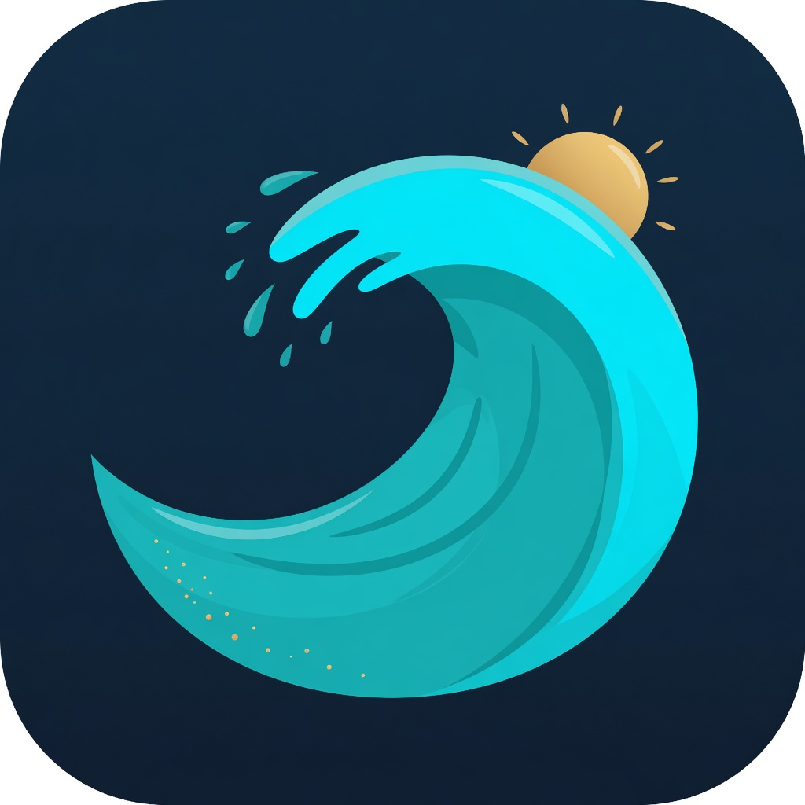

Live swell & wind
How big, how long between sets, and whether the wind is helping or killing it — matched to each break.

Ombak Bagus Bali surf deskDesktop + mobile · Free · Built for Bali
Ombak bagus — good waves. Check swell, wind, and tides for Bali spots, save what worked, and pick the right break without juggling a dozen tabs.
What you get
A personal Bali desk — conditions, spots, and the notes you actually trust. Not a social feed. Not a paywall.
How big, how long between sets, and whether the wind is helping or killing it — matched to each break.
Don’t trust one number. See a few forecasts side by side before you commit to the drive.
Spot when two swells are running together — useful on Bukit and east-coast days when the mix matters.
Simple tide charts so you can plan mid-tide sessions instead of guessing from memory.
Uluwatu, Padang, Bingin, Canggu peaks, Keramas, Medewi, and more — each with its own swell windows and wind angles.
Log what worked after the paddle. Favorites and notes stay on your device — nothing uploaded.
Get started
Grab the Windows setup (~9 MB). No account. No store login needed.
Run the setup, open Ombak Bagus, and let it load forecasts for Bali spots.
Check the dashboard, open a spot, compare models, star favorites, log the session after.
Free personal use · v0.1.2 · Desktop + mobile
Windows: if SmartScreen appears, choose
More info → Run anyway (unsigned personal build).
Mac: builds are produced by GitHub Actions (CI). If
macOS blocks the app, right-click → Open → Open.
Prefer the aarch64 DMG on M1/M2/M3/M4 laptops.
Android: download the APK, open it, and allow install
from this browser if prompted. No Play Store required.
iOS: open the web app in Safari, tap
Share → Add to Home Screen. Works without the App Store.
All release files: github.com/L0nE-F0x/Ombak-Bagus/releases
FAQ
Yes for personal use. The app is a personal project and doesn’t charge you to check the lineup.
Yes — on purpose. The spots and scores are curated for Bali breaks, not a global directory.
Yes — without the stores for now. Android: download the APK from this page. iPhone: open the web app in Safari and Add to Home Screen. Windows and Mac get native installers.
Favorites, notes, and sessions stay on your device. Forecasts are fetched live and not uploaded.
iPhone / iPad
This installs the web app — same Bali forecasts and logbook, no App Store account needed.